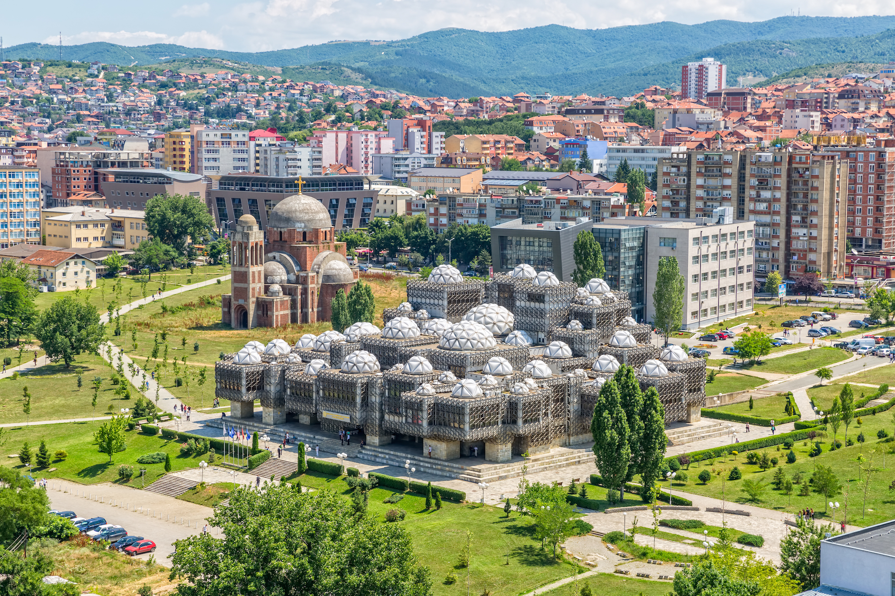

Education
Primary Education
In the context of Kosovo laws for education, the primary education ranging from grades 1-5 along with the lower secondary education is obligatory for all citizens and it begins when the child turns 6 years old. The mandatory is nevertheless free of charge.
The second phase of the obligatory education is the so called lower secondary education which consists of teenagers usually around 12-15 years of age, therefore, grades 6-9. This education, according to the law, is also free of charge and publicly funded. The lower secondary education is held in the five official languages of Kosovo: Albanian, Serbian, Turkish, Croatian, and Bosnian.
Secondary Education
The higher secondary education is categorized in professional and general education and predominantly lasts around 3-4 years conditional on the educational curriculum that is planned by Kosovo’s Ministry of Education. This level of education is not mandatory but nevertheless highly encouraged. Thus, all students who complete the higher secondary education basically do so on voluntary basis. On the ground of professional secondary education, the main aim is to prepare the youth for professional labor markets with the offering of possibilities to pursue university or post-secondary studies. The higher secondary education is categorized in eight types of schools consisting of classes with various teaching profiles.
Universities
Higher Education is available of attaining in various Universities and different educational institutions offering high professional education. Higher education is also available in public or private institutions where the students are offered Associate’s Degrees’, Bachelor Degrees’, Master Degrees’, and PhD’s. Various schedules are additionally available where students can choose to pursue their studies full-time or part-time.
Various alternations were brought by the network of high education institutions where a range of legal standards were adjusted for such institutions to develop. The standards and norms of higher education in Kosovo are supported by European standards as the platform on the development of the higher education system was based on the process of Bologna’s objectives.
The Ministry of Education, Science, and Technology has created the Kosovo Accreditation Agency (KAA) according to Kosovo’s law on high education for the aim of assessing the appropriate quality in the higher education private and public institutions.
American University in Kosovo/Rochester Institute of TechnologyThe American University in Kosovo is the only university in Kosovo that is private and non-profit, solely based on English language teaching. This opportunity attracts students from many communities in Kosovo especially due to the fact that it is the only university whose degrees’ are recognized and accredited all over the world due to the partnership they possess with the Rochester Institute of Technology (RIT) in Rochester, New York, USA.
Students that have been attending AUK up to this date are nationals of 17 different countries world-wide. AUK offers that exact curriculum that is offered by RIT including: the same degree, the same exams, the same syllabuses, the same grading standards, and in many cases the same professors and faculty members.
The University of Prishtina was founded with the Law on the Foundation of the University of Prishtina, which was approved by the Socialist Province of Kosovo Assembly on November 18th 1969. The Foundation of University of Prishtina was a historical event for Kosovo’s population and especially for the Albanian nation. The Foundation Assembly of the University of Prishtina was held on February 1970.
The Newly founded University consisted of these faculties within its headquarters in Prishtina: Faculty of Philosophy, Faculty of Law and Economics, Faculty of Engineering and Faculty of Medicine.
It now has 17 faculties.
Higher Pedagogical Schools and Faculty of Teachers Training were transferred to Faculty of Education which are now based in Prishtina, Gjilan, Gjakova and Prizren.
The University of Prishtina is one of the first institutions of higher education in the region that has undertaken a process of thorough reforms in accordance with Bologna Process. Implementation of the ECTS system began in the academic year 2001/2002 and ECTS Coordinators were appointed in each academic unit, led by the Institutional Coordinator. ECTS Coordinators have attended various trainings in Kosovo and abroad and have exchanged and continue to exchange their experiences with well-known European experts in regards to implementation of the Bologna Process in the University of Prishtina.
For more, visit the links UP